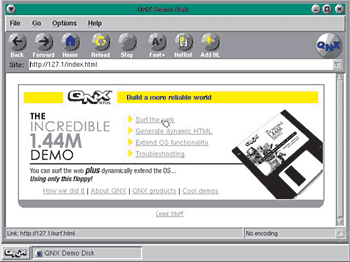
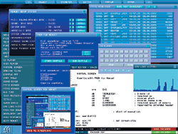
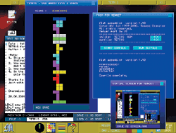
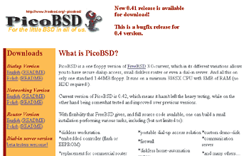
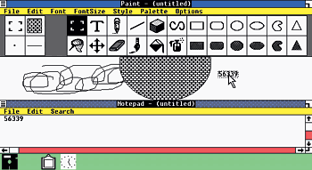

Антон Орлов
Казалось бы, дискета - это такое далекое прошлое, что уже и вспоминать незачем. В скором времени новые операционные системы будут едва умещаться на DVD-дисках. Однако современных однодискетных ОС не так уж и мало. Помимо урезанных версий своих больших собратьев (например, Linux или Unix), среди них существуют и вполне самостоятельные, позволяющие получить доступ к дисковой системе компьютера при <крушении> установленной на нем ОС или даже эксплуатировать машину без жесткого диска, сделав из нее, к примеру, сетевой маршрутизатор или станцию для работы в Интернете.
Однажды, лет 15 назад, мне довелось получить доступ в одно закрытое учреждение. Я приходил туда работать по выходным и в вечернее время. В качестве основного условия с меня взяли обязательство - ни в коем случае не менять содержимое жестких дисков. Два из трех доступных компьютеров имели парольную защиту (не через BIOS, а посредством специальной программы, шифрующей данные на диске). Ясно, что пароль мне так просто сообщить не могли, т. к. его знали всего два-три человека, отвечающие за техническое состояние компьютеров. В связи с этим возникла проблема - а как, собственно, работать? Выход был найден в первый же день. На дискету в 360 Кбайт я установил MS DOS, Norton и какой-то текстовый редактор и, дорвавшись в воскресенье до компьютера, просто вставлял ее в дисковод, запускал компьютер и работал столько, сколько хотел,- даже не касаясь жестких дисков этой машины. Лишь пару раз в месяц приходилось делать резервную копию.
Конечно, все это дела давно минувших дней. Однако и сегодня нередки ситуации, когда маленькая дискетка с записанной на ней полнофункциональной системой окажется просто необходимой.
QNXQNX - операционная система фирмы QSSL, предназначенная для использования в промышленных компьютерных устройствах. Она отличается повышенной надежностью и гарантированно реагирует на любой поступивший к ней сигнал в течение очень малого промежутка времени. Именно QNX установлена на оборудовании, произведенном фирмами Panasonic, Sony, Ford, Kodak, General Motors, DuPont, VISA, Canon, Honda, SAAB, General Electric, General Dynamics и др., причем служит она не для красивого интерфейса, а для реального управления прокаткой стали, например, или нефтедобычей. QNX укомплектованы даже компьютеры на американских истребителях F-16. Сверхнадежную QNX можно встретить по всему миру - в России она работает на компьютерных системах прокатных станов Магнитогорского металлургического комбината и на управляющих комплексах нефтепроводов в городе Ухта.
И самое интересное, что эта огромная и мощная система легко умещается на одну дискету! <Неужели? - спросите вы.- Вся ОС со всеми функциями и подпрограммами влезает в полтора мегабайта?> Если честно - то, разумеется, нет. Влезает, но не вся. Только ядро, базовый графический интерфейс и сетевые компоненты, позволяющие работать в Интернете. Однако этого вполне достаточно, чтобы познакомиться с QNX и составить о ней общее представление.

На одной дискете - даже браузер. Хоть сейчас отправляйся в Сеть.
Архив с однодискетной русифицированной демоверсией QNX, занимающий 1,38 Мбайт, можно взять с сайта www.qnx.com/demodisk/download/russian.html. Запустив находящуюся в нем программу при вставленной в дисковод пустой дискете, вы получите загрузочный диск. Системные требования демоверсии QNX самые скромные. На 386-м компьютере с 8 Мбайт памяти и мышью QNX-demo пойдет преспокойно.
После приветственного экрана, выдержанного в строгом стиле, но весьма информативного, и несложной процедуры настройки посредством пары диалоговых окон, где придется лишь указать желаемое разрешение экрана и еще два-три параметра, вы увидите Рабочий стол QNX, к сожалению, в демоверсии аскетично-черный. Выпадающее при нажатии правой кнопки мыши меню программ содержит немного компонентов, но те, что присутствуют, позволяют познакомиться с QNX довольно близко. К примеру, можно набрать текст в простейшем текстовом редакторе, поиграть в игру <Ханойская башня>, познакомиться со строением файловой системы QNX.
Но самыми интересными компонентами демо-QNX, пожалуй, будут Интернет-браузер
Voyager и программа установки удаленного доступа к Сети. Если на вашем
компьютере есть модем, поддерживающий стандарт Plug & Play (естественно, не
<софт-модем> и не
Если работа в QNX заинтересует, то можно загрузить с сайта фирмы QSSL три пакета расширений - системный, игровой и для работы по протоколу Telnet. В первом находятся две программы, по набору функций похожие на <Системный монитор> Windows, а содержимое остальных двух ясно из названий. Занимают все пакеты несколько десятков килобайт, за исключением игрового, тот весит аж 210 Кбайт.
Демоверсия QNX, помимо чисто ознакомительных целей, может пригодиться еще и в том случае, если возникла необходимость срочно получить доступ ко Всемирной сети с компьютера, который для этого не приспособлен, например, по причине <слетевшей> ОС или отсутствующих жестких дисков. В этом случае, загрузившись с дискеты и присоединив к компьютеру модем, легко войти в Интернет при помощи Voyager. Представьте себе, например, Интернет-салон из 386-х компьютеров без жестких дисков (но с дискетами во флопповодах), подсоединенных к локальной сети с выходом в Интернет. Неплохое применение старой технике, правда?
В том случае, если изучение QNX вызовет у вас горячий интерес к этой операционной системе, посетите русский сайт ее пользователей - http://qnx.org.ru/.
MenuetOSВ то время как над операционной системой QNX трудились десятки программистов, эту ОС придумал всего один человек - житель Финляндии Вилле Турьянмаа. Написана она на ассемблере.
Несмотря на то что ее разрабатывает всего лишь год один человек в свободное время, эта ОС уже сейчас является весьма функциональной и мощной. В ней даже реализована многозадачность. Помимо графического интерфейса, поражающего своим быстродействием, в MenuetOS встроено множество полезных утилит, таких, как текстовый процессор, проигрыватель компакт-дисков и MIDI-файлов, компилятор на языке ассемблер и несколько игр. С помощью MenuetOS легко получить доступ к дискетам и разделам жесткого диска с файловой системой FAT32. Она поддерживает разрешение 1280x1024 при отображении 16,7 млн цветов, может воспроизводить музыкальные компакт-диски со стереозвучанием, требуя при всем этом всего лишь компьютер с 386-м процессором и видеокартой с поддержкой Vesa 2.0 (однако объем оперативной памяти должен быть не менее 32 Мбайт). MenuetOS умеет создавать несколько виртуальных Рабочих столов, между которыми можно переключаться, выбирая внешний вид экрана и набор открытых приложений, необходимый в настоящий момент, - функция, реализуемая в Windows при помощи громоздких утилит.

MenuetOS. Реальная многозадачность в действии.
Исходный код MenuetOS распространяется вместе с ней (согласно так называемой General Public License), так что любой, кто умеет программировать на ассемблере или пожелает его изучить, может принять участие в совершенствовании этой операционной системы. Тем более что в составе дистрибутива имеется компилятор и краткая справка по этому языку. Для написания MenuetOS использовалась 32-битная версия ассемблера, значительно улучшенная по сравнению с предыдущей, 16-битной, в плане облегчения написания кода и логики самого языка.
Данная ОС распространяется с сайта Вилле Турьянмаа. Для работы MenuetOS жесткий диск не требуется, хотя при наличии файловой системы FAT32 она может получить к нему доступ. Помимо просмотра дерева директорий, с жесткого диска можно запускать приложения MenuetOS и редактировать текстовые файлы.

MenuetOS, <Тетрис>, Ассемблер, набор виртуальных экранов, текстовый редактор, обои Рабочего стола, и все это на одной дискете.
Несмотря на новизну MenuetOS, в Сети уже есть даже посвященные ей русскоязычные ресурсы - например, http://menuet.narod.ru/, являющийся переведенным <зеркалом> официального сайта Вилле Турьянмаа, на котором вы также можете ознакомиться с русской документацией по системе, принять участие в обсуждении ее недостатков и достоинств.
К сожалению, пока MenuetOS трудно назвать полноценной операционной системой. Функция доступа в Интернет в ней отсутствует, как и полноценный файловый менеджер, и мало-мальски функциональные текстовые и графические редакторы. Однако в отличие от многих других ОС в разработке MenuetOS могут принять участие все желающие - так что если вам в целом понравилась эта операционная система, то в вашей власти сделать ее лучше. Да, это трудно - а кто говорил, что будет легко? Разработка ОС - не простое развлечение.
PicoBSDВ отличие от двух описанных выше мини-ОС, предназначенных скорее для развлечения, нежели для работы (хотя Интернет-салон в стиле <ретро> на основе QNX из списанных компьютеров сделать вполне возможно), PicoBSD является полноценной операционной системой класса FreeBSD, способной работать даже в качестве сервера модемных входов. Она не требует наличия у компьютера жесткого диска и способна функционировать даже на 386-SX компьютере с 8 Мбайт оперативной памяти. Единожды загруженная, PicoBSD не обращается к флоппи-диску, так что медлительность дисковода на ее стабильность работы не влияет.
Компьютер с данной ОС вполне способен послужить маршрутизатором локальной сети или файервола, с его помощью легко организовать доступ в локальную сеть по модему (для сотрудников учреждения, работающих вне офиса, или при организации станции обмена информацией - BBS) или сделать автоматизированную станцию управления каким-нибудь устройством. Загрузив PicoBSD с дискеты на компьютере с установленным модемом, можно получить и доступ в Интернет. Но за все вышеуказанные функции приходится расплачиваться - к сожалению,

Сайт, посвященный PicoBSD. Сетевые версии - на выбор.
PicoBSD не имеет графического интерфейса. Поэтому полноценно работать с этой мини-ОС получится лишь досконально изучив язык ее командной строки, чему, впрочем, немало поспособствует встроенная справка.
Загрузить PicoBSD можно с сайта ее авторов, расположенного по адресу http://people.freebsd.org/~picobsd/picobsd.html или http://perecod.chat.ru/frbsddsk.rar. В последнем архиве присутствует как образ дискеты PicoBSD, так и программа, которая способна перенести его на флоппи-диск, в то время как с первого адреса вам придется скачивать образ и программу по отдельности.
Однодискетная WindowsДа, да! На одну полуторамегабайтную дискету может поместиться не только DOS, но и Windows! Естественно, не Windows 95 и даже не 3.11, а самые ранние версии. Например, Windows 1.0. Даже при всей своей неустойчивости она предоставляет довольно комфортные условия для работы: есть и текстовый, и графический редакторы, и даже буфер обмена. В следующей версии, 2.0, возможностей больше, но и занимает она уже 1,2 Мбайт (в установленном виде) - почти всю дискету, так что на драйверы NTFS-разделов и дополнительные утилиты места может уже не остаться. Впрочем, всегда можно попробовать поместить файлы установленной на дискету Windows в самораскрывающийся архив и создавать для них виртуальный диск в оперативной памяти. Однако для этого потребуется весьма нетривиальное редактирование автозапускаемых файлов и файлов конфигурации ОС.

Старая-старая Windows. Первая версия. Не такая уж и слабая. Влезает на одну дискету.
Операционные системы Windows версий 1.0 и 2.0 сейчас стали уже редкостью. Хотя на некоторых сборниках программ их еще можно обнаружить. Немного поэкспериментировав с настройкой этих ОС, удается получить дискету с графическим интерфейсом, файловым менеджером и набором простых редакторов и утилит. Конечно, о доступе в Интернет, сетевых компонентах, нормальном графическом режиме останется лишь мечтать, но и имеющихся функций достаточно для довольно широкого круга задач. Может быть, такая дискета вдохнет жизнь в какой-нибудь пылящийся на антресолях старый 286-й компьютер.
ЗаключениеРазумеется, семейство операционных систем, чей объем не превышает полутора мегабайт, не исчерпывается вышеописанными ОС. На одну дискету вполне умещается ОС Linux, даже с сетевыми компонентами, с сайта www.toms.net/~toehser/rb можно загрузить такой ее вариант вместе с руководством по эксплуатации и ответами на частые вопросы. По адресу http://master-www.psychosis.com:8080/linux-router представлен вариант Linux, умещающейся в 1,44 Мбайт и содержащей сетевой маршрутизатор. Если постараться заполнить Linux флоппи-диск с максимальной отдачей, то на него, кроме самой ОС, влезут сетевые драйверы с поддержкой протокола TCP/IP, серверы DHCP, DNS и Web-сервер, однако для достижения такого результата надо сильно постараться. На одну дискету умещаются многие версии MS DOS, операционная система CP/M, урезанные версии Unix. Большинство таких ОС, скорее всего, заинтересуют лишь тех, кто непосредственно планирует решить с их помощью ту или иную задачу, не выполнимую другими путями (например, разместить маршрутизатор, файервол и пару сетевых сервисов на старом компьютере с 386-м процессором и без жесткого диска). Однако в любом случае современная однодискетная ОС являясь прекрасной демонстрацией того, что можно достичь умелой разработкой кода и заботой о его оптимизации, окажется хорошим подспорьем при восстановлении работоспособности компьютера после критического сбоя.
Удачи вам!